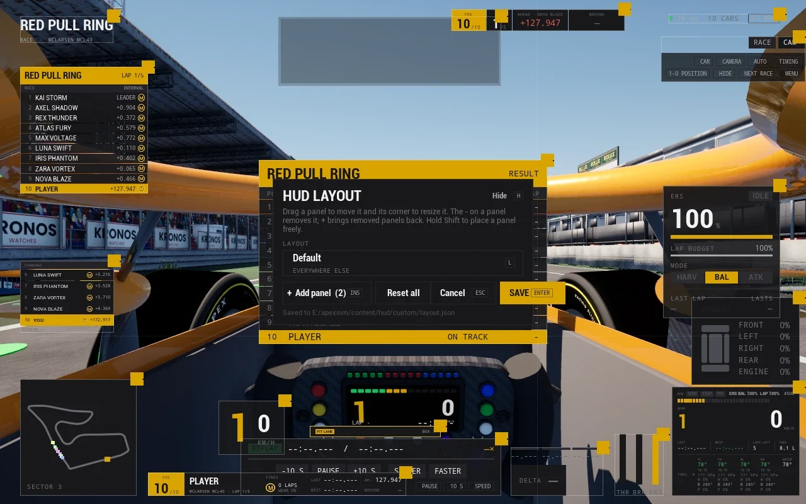

Modding
Open the files
Cars, circuits and the HUD are files the game reads as it runs. Nothing is cooked, so a change is a file save and a restart: no Unreal editor, no repackaging.
Cars, circuits and the HUD are files the game reads as it runs. Nothing is cooked, so a change is a file save and a restart: no Unreal editor, no repackaging.
A car is a folder: a car.toml with its physics and looks, and the GLB it names. The server reads the physics tables, the game the visual ones.
Mass, engine, gearbox, tyres, aero, brakes, suspension, hybrid and damage, every key documented; a key left out keeps its default, so a car only says what makes it different.
A [[livery]] table recolours the paint and accent and swaps the logo; a whole skin is a texture. The garage's livery editor paints yours in game.
A car's [sound] table describes its cylinders and exhausts, and the engine synth plays it.
A circuit starts as a centerline from a GPS trace or OpenStreetMap, and the track pipeline dresses, bakes and exports it.
ats-dress, ats-groom and ats-export turn a centerline and a layout dossier into the export the game builds, and the road mesh, walls, kerbs and pit lane the server drives on.
A scene editor on top places props, kerbs, run-off and the pit lane.
Elevation from satellite surface models, the real furniture from OpenStreetMap.
The race HUD is a set of components laid out in JSON and bound to the data points the game publishes every frame.

The layout editor moves, resizes, adds and removes panels, and keeps several named layouts that switch by where you are: watching, hotlap or your car's class.
Copy a shipped panel and edit it, hide one, or write a new one: text, bars, gauges and expressions over the data points.
Every data point is listed and kept stable, so a component keeps working as the game moves on. A broadcast layout with a timing tower and a lower third ships as an example.
A car, a circuit or a HUD component travels as a pack the launcher installs.
Manage content > Install pack... lists what a pack holds with a tick box each and puts it where both the game and its server read it.
Tick your own content and press Uninstall...; shipped content cannot be removed.
Packs are hash-checked, and every car and circuit carries a checksum, so a player on different data than the server is told.
The game sends the car's state to the app of your choice.
Motion, revs, pedals, tyres and session as a UDP packet for SimHub, a motion platform, bass shakers or a dash. The layout is public and append-only.
Each lap's trace is a CSV on disk, and a script turns them into a MoTeC i2 file.
The simulation stays apart from the presentation. The circuit you race is the circuit the server simulates, checked by CRC on both sides.
420 Hz loop. Physics, collisions against cars and baked barriers, tyres, fuel, heat and damage, race control and pit stops, AI, force feedback, timing, events and championships. /health /metrics
Tracks and cars built at runtime from their files, a HUD from JSON, a cockpit built per car, damage, tyres and road drawn from the server's figures, synthesised audio, DirectInput wheels. Every car a telemetry puppet.
The ats-* tools and an editor turn a centerline and a dossier into the export the game builds and the sidecars the server drives on; ats-pack wraps a circuit or a car.